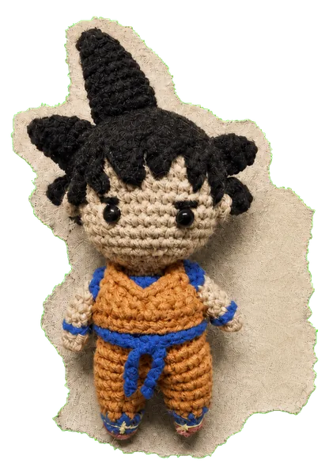
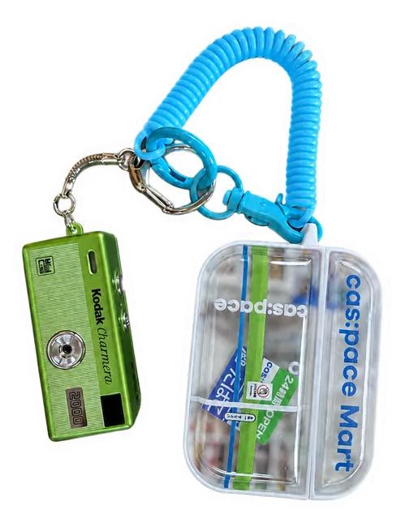
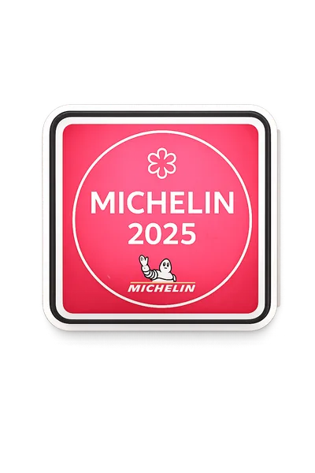
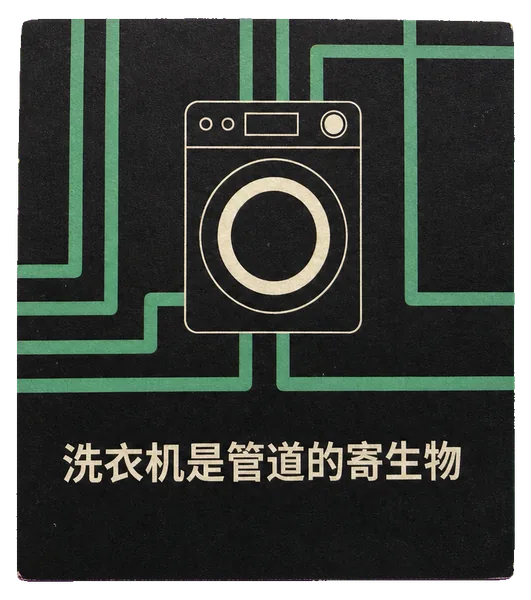

ABOUT ME02 / 02
包子是谁
工作之外，
也想做一个生活家。
前小红书商业化早期员工，懂一些营销，也懂一点产品。持续记录文字、料理、运动与摄影。
阅读完整 About
OPEN BINDER / 01
这是包子的数字花园：把思考、创作与生活记录留在自己掌控的空间里，而不是交给推荐算法决定它们如何被分发。
包子是谁
前小红书商业化早期员工，懂一些营销，也懂一点产品。持续记录文字、料理、运动与摄影。
阅读完整 About
这里记录什么
Blog、Photos、Project，以及关于喝酒、书、音乐和电影的记录。每一页都从真实内容开始。



THE INDEX / 02
主页是清楚的目录：先看到最近的一页，再进入 Blog、Photos、Project 和生活记录。没有正式内容的栏目只保留入口，不制造空文章。
一期关于努力、音乐、料理与品牌的料亭菜单。
主栏目和次栏目使用相同发布门禁。
A NOTE ON THIS DEMO
本 demo 使用现有素材搭建结构。正式页面仍需等真实内容逐栏目通过发布门禁后再实现。
MOVIES / 03
电影与剧集共用一个清晰的记录模型。顶部先看总体统计和最近活动，下面再进入具体作品。
首次完整看完 · 2016—2026
2016-09-29 · 《火花》首次完整看完
按最近活动排序 · Top 5
只展示已确认的真实记录。其余条目待妳补充，不用推荐位填充。
SERIES / JAPAN / 2016
如果哪天我看这部没触动了，那我就真的是条咸鱼了。